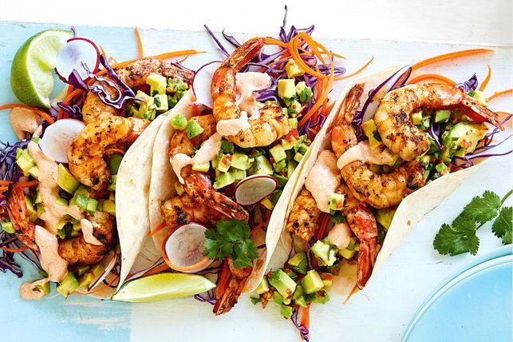

Mexican prawn wraps

Spicy and smoky chipotle sauce covered prawns,
served with sliced avocado and sour cream.
Ingredients
- Raw prawns
- 4 large tomatoes, quartered
- Pinch of salt
- 2 chipotle chillies (with adobo sauce)
- Rehydrated guajillo pepper, chopped (optional)
- 1 small onion, diced
- 3 garlic cloves, finely chopped
- 1 Lime
- 1/2 tsp Mexican oregano
- 8 tortilla wraps
- 1 avocado, thinly sliced
- Sour cream, to serve
Method
- Put tomatoes, chipotles en adobo, salt and guajillo (if using)
into food processor and blitz until pureed.
- Heat oil in pan. Fry prawns. Remove from pan. Squeeze lime juice over
- Fry onion. Add garlic. Add prawn juices. Add oregano.
- Add tomato mixture. Turn up heat and reduce
- Prawns back in. Off heat. Lid on. 4 minutes
- Warm tortillas
- Serve with avocado and sour cream.
Back home...